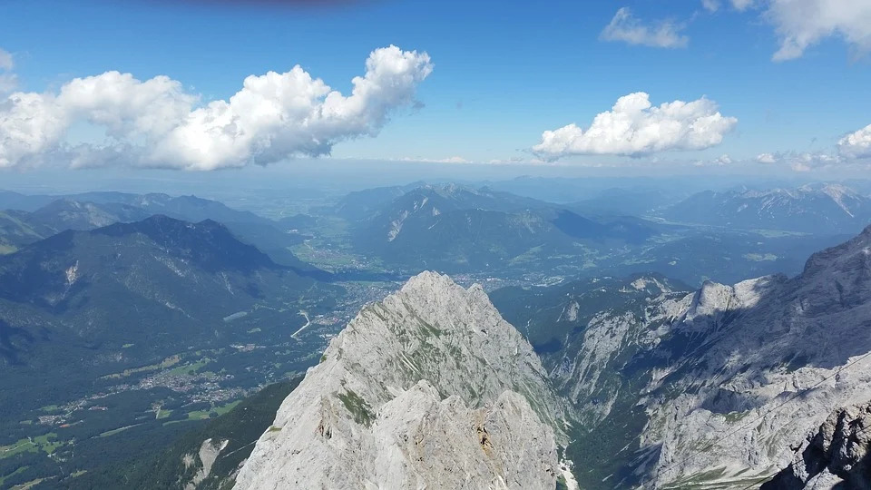
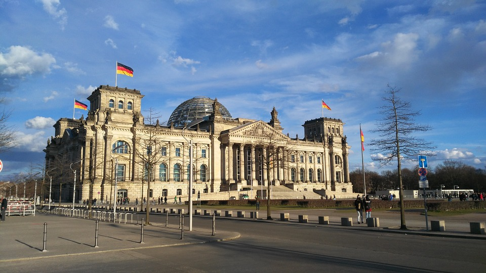

Geografie
Hlavními tvary terénu celky Německa jsou od severu k jihu Severoněmecká nížina, Středoněmecká vysočina, alpské předhůří a velehorské pásmo německých Alp. Německo sousedí s devíti státy: Dánsko, Polsko, Česko, Rakousko, Švýcarsko, Francie, Lucembursko, Belgie a Nizozemsko. Německo je zemí v Evropě, která sousedí s nejvíce státy. Na severu sousedí Německo s Dánskem (délka hranic 67 kilometrů), na severovýchodě s Polskem (442 kilometrů), na východě s Českem (811 kilometrů), na jihovýchodě s Rakouskem (815 kilometrů; bez hranice v Bodamském jezeře), na jihu se Švýcarskem (316 kilometrů; s hranicí exklávy Büsingen, ale bez hranice v Bodamském jezeře), na jihozápadě s Francií (448 kilometrů), na západě s Lucemburskem (135 kilometrů) a s Belgií (156 kilometrů) a na severozápadě s Nizozemskem (567 kilometrů). Délka hranic činí celkem 3 757 kilometrů (bez hranic v Bodamském jezeře). Během dějin se často měnil i střed německého státu. Německo se nachází na eurasijské kontinentální desce, přesto se vyskytují slabá zemětřesení, především v Porúří. Alpy, které vznikly třetihorním zvrásněním kontinentálních desek, jsou jedinými německými velehorami. Na hranicích s Rakouskem leží nejvyšší hora Německa – Zugspitze o nadmořské výšce 2962 metrů. Středoněmecká vysočina nabývá směrem od severu k jihu na výšce a rozloze. Nejvyšší se nachází ve Schwarzwaldu – 1493 metrů vysoký Feldberg, následován 1456 metrů vysokým Großer Arber v Bavorském lese. Vrcholy o výšce vyšší než 1000 metrů mají dále Krušné hory, Smrčiny, Švábská Alba a pohoří Harz, které je izolovanou částí Středoněmecké vysočiny s nejvyšší horou Brocken o nadmořské výšce 1142 metrů. V severní části Německa se nachází jednotlivé kopce vyšší než 100 metrů, z nichž nejvyšší je Hagelberg v geomorfologické části Flaming v Braniborsku. Nejnižší bod Německa je proláklina 3,54 metrů pod úrovní mořské hladiny u Neuendorf-Sachsebbande v Šlesvicku-Holštýnsku. Rovněž ve Šlesvicku-Holštýnsku se nachází nejhlubší zatopený bod Německa: 39,10 metrů pod úrovní mořské hladiny na dně Hemmelsdorfer See severoseverovýchodně od Lübecku. Nejnižší umělý vytvořený bod Německa je 293 metrů pod úrovní mořské hladiny na dně hnědouhelného dolu Hambach východně od Jülichu v severním Porýní-Vestfálsku. Území Německa odvodňují z největší části řeky Rýn, Dunaj, Labe, Odra, Vezera a Emže. Německé území je odvodňováno do Severního moře, Baltského moře a Černého moře. Přes německé území vede hlavní evropské rozvodí. Nejvýznamnější německou řekou je Rýn, který má v Německu délku 865 kilometrů. Rýn dominuje jihozápadu a západu Německa. Nejdůležitějšími přítoky jsou Neckar, Mohan, Mosela a Rúr. Ekonomický význam Rýna je značný, jedná se o jednu z hospodářsky nejvýznamnějších řek Německa a Evropy. Na jihu má na německém území Dunaj délku 647 kilometrů, odvodňuje skoro celé předhůří Alp. Dunaj teče směrem do Rakouska a jihovýchodní Evropy. Jeho nejdůležitějšími přítoky jsou Iller, Lech, Isar a Inn. Na východě Německa má na německém území Labe délku 725 kilometrů. Jeho nejdůležitějšími přítoky jsou Sála a Havola. Hranici Německa a Polska z větší části tvoří Odra, jejím nejdůležitějším přítokem je Lužická Nisa. Celé povodí Vezery leží v Německu. Vzniká soutokem Werry a Fuldy a odvodňuje severní část Německa. Emže (Ems) teče v severozápadní části Německa. Přirozená jezera na německém území jsou převážně ledovcového původu. Největší německá jezera se proto nachází v předhůří Alp a Meklenburské jezerní plošině. Největším jezerem, které leží celé na německém území, je Müritz, ležící v Meklenburské jezerní plošině. Největší jezero na německém území je Bodamské jezero, o které se ale Německo dělí s Rakouskem a Švýcarskem. Na východě Německa se nachází mnoho velkých jezer, která se nachází v zatopených bývalých hnědouhelných dolech.
Tabulka
| Ukazatel | Hodnota |
|---|---|
| Rozloha | 357 022 km2 |
| Počet obyvatel | 83 019 213 |
| Hlavní město | Berlín |
| Úřední jazyk | Němčina |
| Měna | Euro (€) |
Fotky

